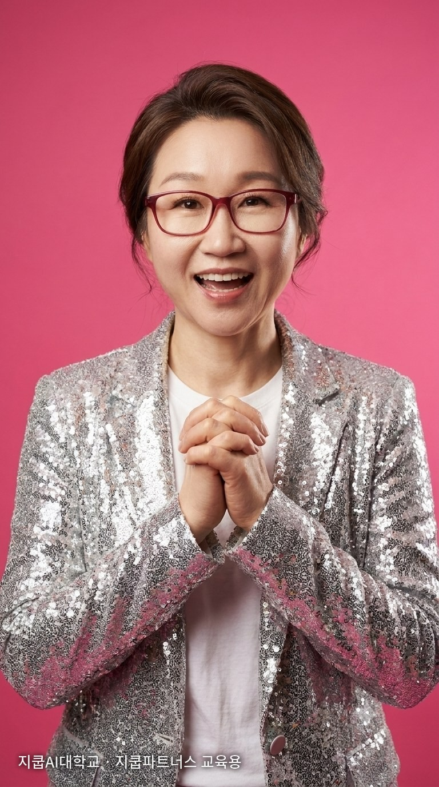

오늘의 프롬프트AI로사쌤 · 14번
지쿱AI대학교 · 지쿱파트너스 교육용 프롬프트
색종이 펑! 축하 파티, 사진에서 영상까지
먼저 사진을 만들고, 그 사진으로 영상을 만드는 두 단계예요. 남녀 누구나 쓸 수 있어요.
1단계사진 만들기

제미나이나 챗GPT에 본인 사진을 먼저 올리고, 아래 프롬프트를 붙여넣으세요.
업로드한 사진 속 인물을 주인공으로 한 실사 사진. 얼굴을 그대로 반영하고 이목구비, 얼굴형, 헤어스타일, 안경을 바꾸지 말 것. 여성이면 여성, 남성이면 남성으로 표현. 화사하게 미소 짓는 밝은 얼굴.
옷은 반짝이는 은색 재킷과 흰 티셔츠의 세련된 파티 차림.
장면: 인물이 무늬 없는 선명한 분홍색 스튜디오 배경 앞에 서서 두 손을 가슴 앞에 모으고 무언가를 기다리듯 설레는 표정으로 카메라를 보는 모습. 공중에는 아직 아무것도 없이 깨끗함.
구도: 머리 위부터 허리 위까지의 상반신, 얼굴이 화면에 크게 보이게, 얼굴을 환하게 밝히는 밝고 선명한 정면 조명.
고해상도 4K 실사, 피부결과 머리카락까지 선명하게, 자연스러운 손가락, 이미지 안에 글자·로고·워터마크 없음, 세로 9:16.
2단계영상 만들기
1단계에서 만든 사진을 영상 도구에 첫 장면으로 올리고, 아래 프롬프트를 붙여넣으세요.
첫 프레임 이미지 속 인물의 얼굴, 헤어스타일, 안경, 의상을 끝까지 그대로 유지.
0~3초: 인물이 리듬을 타며 어깨를 가볍게 흔들고 카메라를 보며 기대에 찬 미소를 지음. 음악이 점점 고조됨.
3~4초: 인물이 두 손을 위로 번쩍 들어 올리는 순간, 화면 양옆 아래에서 금색·은색·분홍색·하늘색 색종이가 펑 하고 터져 올라옴.
4~8초: 색종이가 슬로모션으로 화면 가득 흩날리고 인물이 눈을 감았다 뜨며 활짝 웃고, 머리와 어깨에 색종이가 내려앉음. 카메라가 리듬에 맞춰 살짝 줌 인.
8~10초: 인물이 손바닥에 내려앉은 색종이를 카메라 쪽으로 후 불어 날리며 환하게 웃음.
소리: 신나는 비트의 팝 음악, 터지는 순간 강한 비트와 펑 하는 효과음, 환호 소리. 대사 없음.
4K 고해상도 실사 영상, 10초 원테이크, 움직임은 자연스럽고 부드럽게, 얼굴과 손 변형 없음, 화면에 자막·글자·로고 없음.
지쿱AI대학교 · 지쿱파트너스 교육용 프롬프트
출처 · AI로사쌤 · 무단 복제와 재배포를 금합니다